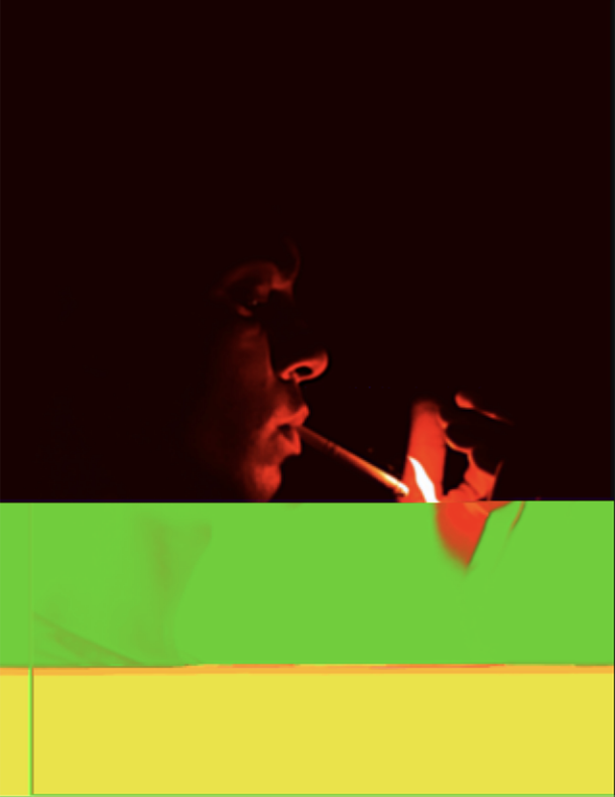
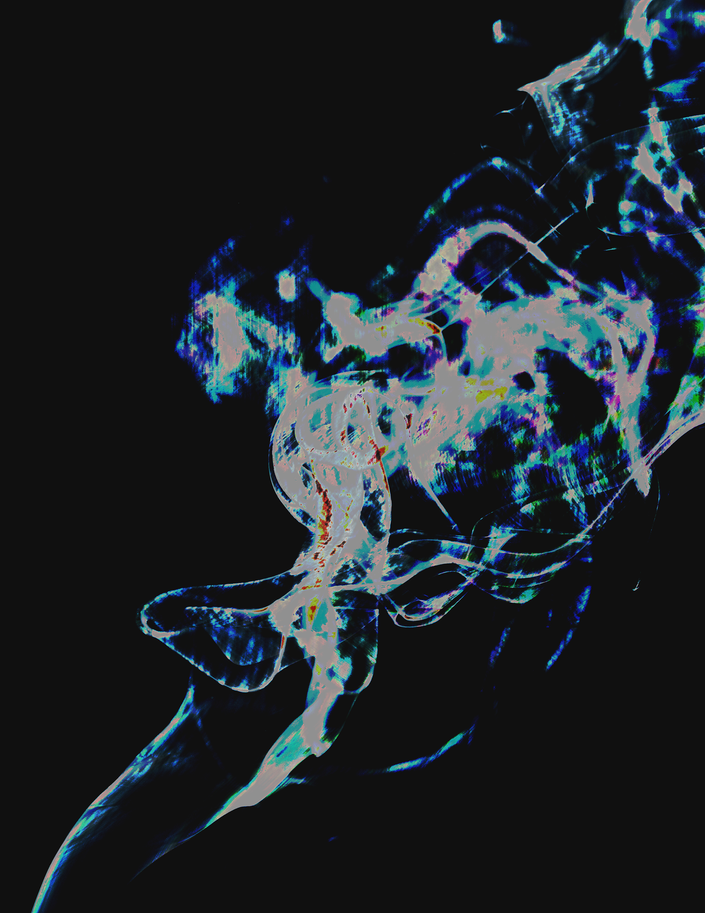
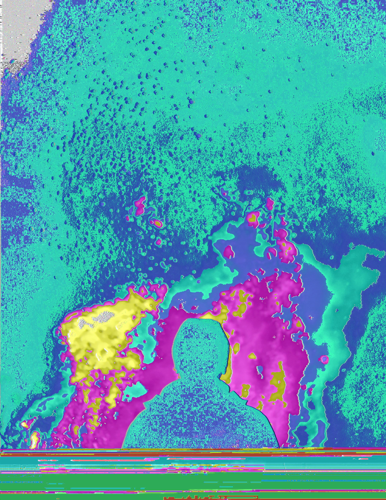
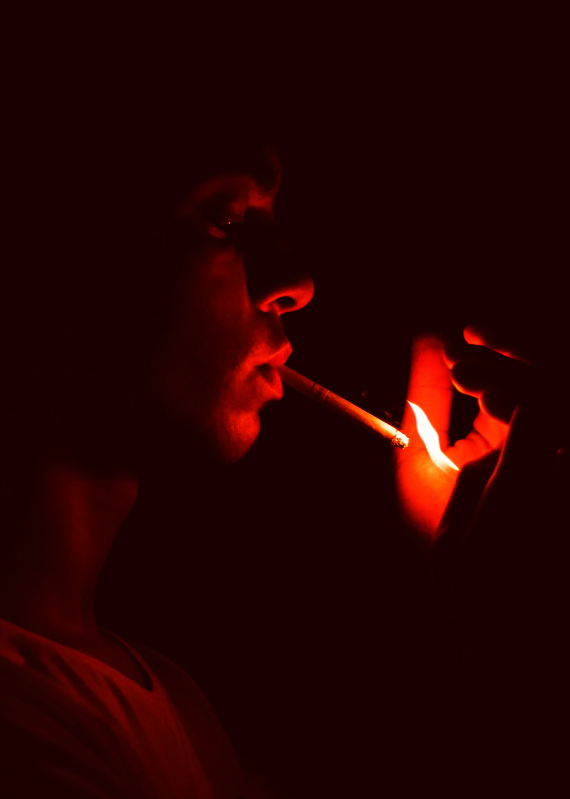

A medium that turns digital errors, malfunctions, and distortions into expressive visual and even audiovisual artwork. The pieces here demonstrate two of the many techniques one can use to create glitch art images: Mac's TextEdit and Audacity, and a combination of both.
Open an image in TextEdit to access its digital data, scroll to about 15-25% into the file, and begin making changes to its code by copying, pasting, and duplicating sections of text. Before proceeding, save the altered file as a JPG and drag it into a browser to view, screenshot it, and you’re done.

Open an image in Adobe Photoshop, document its original dimensions and channel settings, then save it as a Photoshop RAW file and import the data into Audacity. From there, apply an audio filter and export the file using the RAW headerless format with U-Law encoding. Reopen it in Photoshop and enter the dimensions and settings documented earlier to reveal your new glitch art. Finally, save it as a PNG.

First, I edited the image in TextEdit until I was satisfied with the glitch. Second, I used the Audacity method. Finally, I saved the blended results as PNG files.

First, I edited the image in TextEdit until I was satisfied with the glitch. Second, I used the Audacity method. Finally, I saved the blended results as PNG files.
